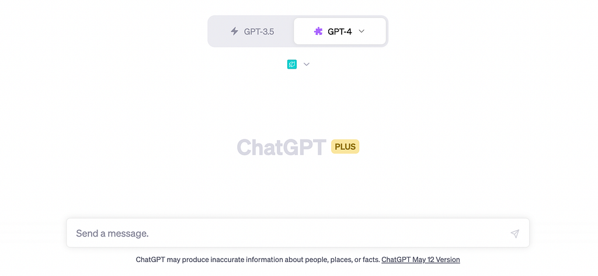
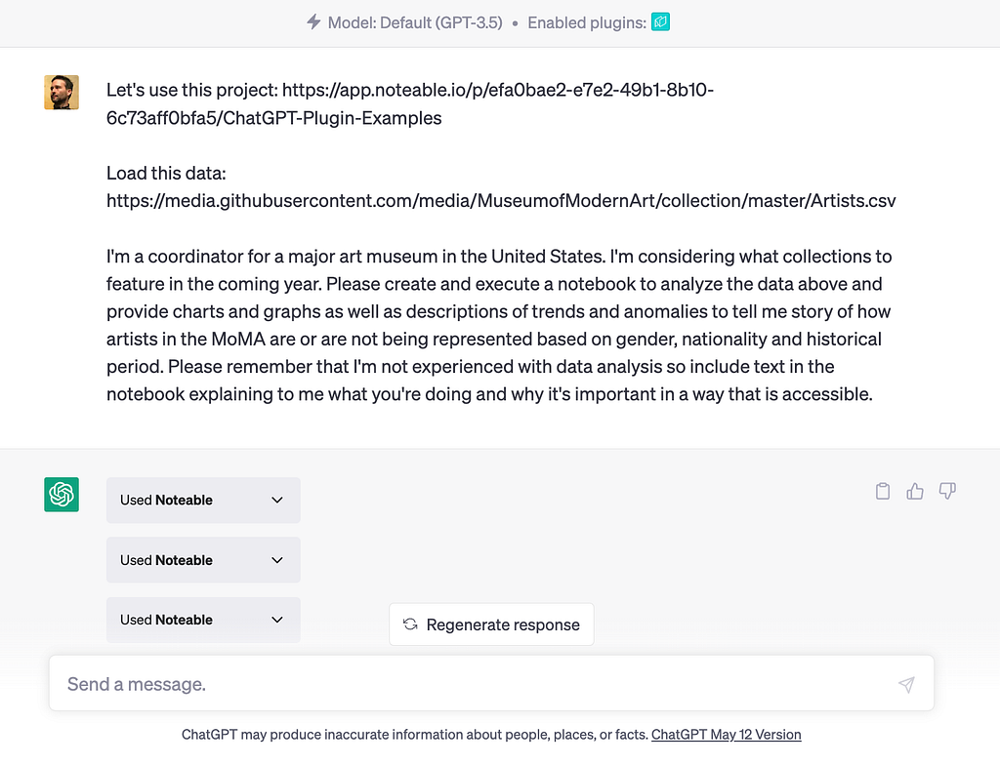
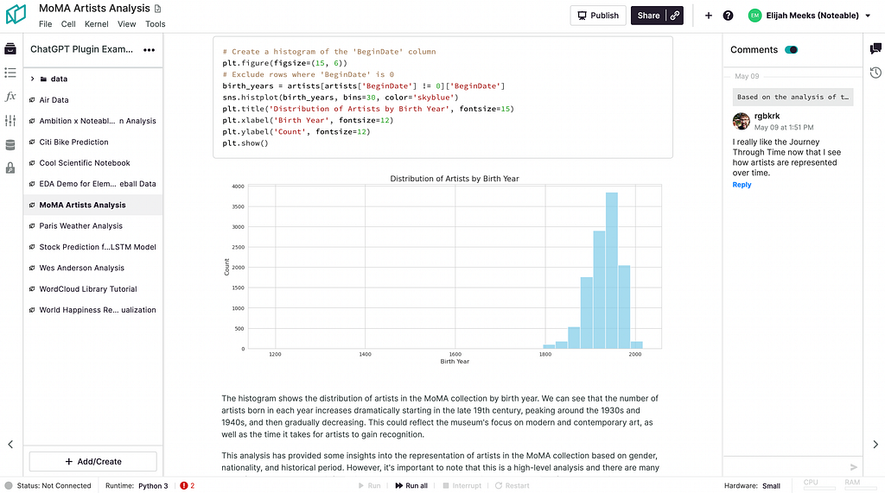
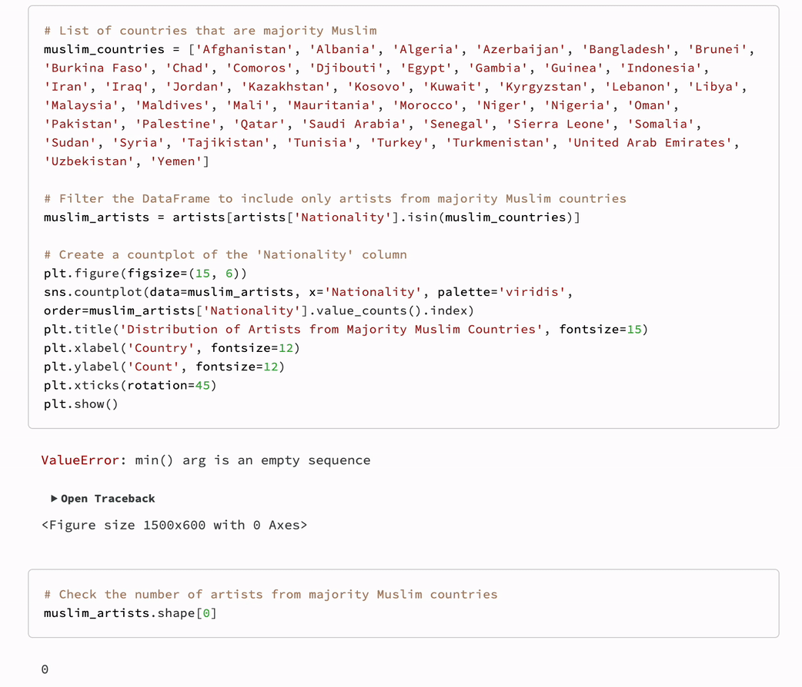
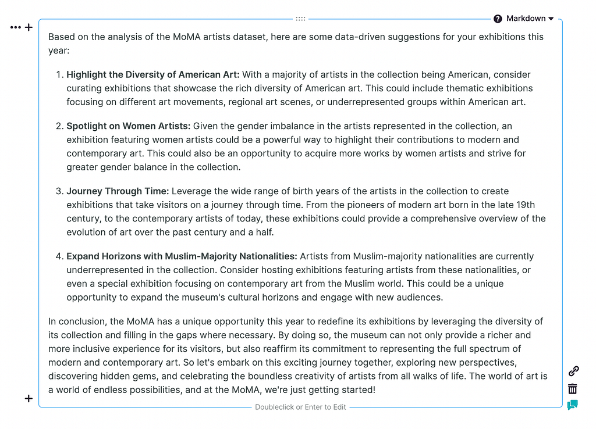

Using Persona-Driven Notebook Generation to Analyze Data
It’s been so exciting to use the new Noteable plugin for ChatGPT. This plugin enables you to create a computational notebook with just a simple prompt. That means if you’ve never used notebooks before or even if you’ve never coded a single line, you’ll be able to create data-driven reports just by using ChatGPT’s interface with our plugin enabled.

First, you’ll need to log into ChatGPT and make sure you have ChatGPT Plus for plugin access. Once that’s done and you have plugin access, you just need to install the Noteable plugin. You’ll need to have a Noteable account (the plugin will help you create one if you don’t already). And now, we’re ready to dive into the magic of creating a computational notebook! This post will cover the same steps and material from this video.

To demonstrate how the plugin works, I’m going to use data from the Museum of Modern Art about the artists in their collection. Rather than ask it a question related to my work, which is pretty arcane these days, I’m going to use a process I’ve started to think of as Persona-Driven Notebook Creation. Drawing from the concept of personas in design, I’m going to imagine how a coordinator for a major art museum might use this plugin. That coordinator may want to analyze the data for trends and anomalies based on gender, nationality, and historical period. And since they’re inexperienced in notebooks and data science, they would want to make sure the results are clear and easy to understand for someone without data analysis experience.

When we run the prompt, ChatGPT starts to use the Noteable plugin to create a notebook (if you’re curious, check out the notebook ChatGPT created here). Even though the primary output is the notebook document itself, it will also give feedback on what it’s doing in the ChatGPT interface. Each time it displays that Noteable badge that means the plugin is working to create and run cells in your notebook. For those unfamiliar with Jupyter notebooks, these cells can be either text or code cells and are used to analyze the data, visualize it, and much more!

The best part? The notebook is interactive, allowing you to develop it on your own or with a team. This means a notebook is a narrative of code and text which you can use once ChatGPT is done generating it to expand on your data-driven analysis. You can connect to data sources, leave comments, visualize data, and do all sorts of amazing things.
In this particular example, I also asked ChatGPT to analyze artists from countries that are majority Muslim. The plugin added code to the notebook to analyze the data based on a list of countries. Which is the wrong approach, since the data clearly describes Nationality and not Country of Origin. But it’s a mistake that was easily corrected: I simply asked ChatGPT to update the cell to use nationality, and it did just that!

The end result is a fully-fledged computational notebook filled with data analysis, visualizations, and explanations, all without me writing a single line of code or text in the notebook.

As a final touch, I asked ChatGPT to add a cell with data-driven suggestions for how the museum should approach its exhibitions in the following year, along with a bit of marketing flair. And guess what? It delivered four exciting, data-driven suggestions with a call to action that says, “The world of art is full of endless possibilities. Seize this opportunity and create a truly unforgettable experience for your visitors!”
Now it’s your turn to revolutionize the way you create notebooks. Give the ChatGPT Noteable plugin a try and unleash the endless possibilities it offers. Together, let’s create a world where data analysis and visualization are accessible to everyone. Happy notebook-making!
Revolutionize How You Make Data-Driven Decisions with Noteable’s ChatGPT Plugin was originally published in Noteable on Medium, where people are continuing the conversation by highlighting and responding to this story.